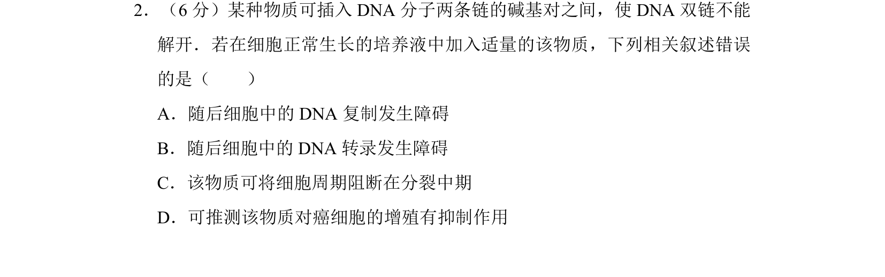
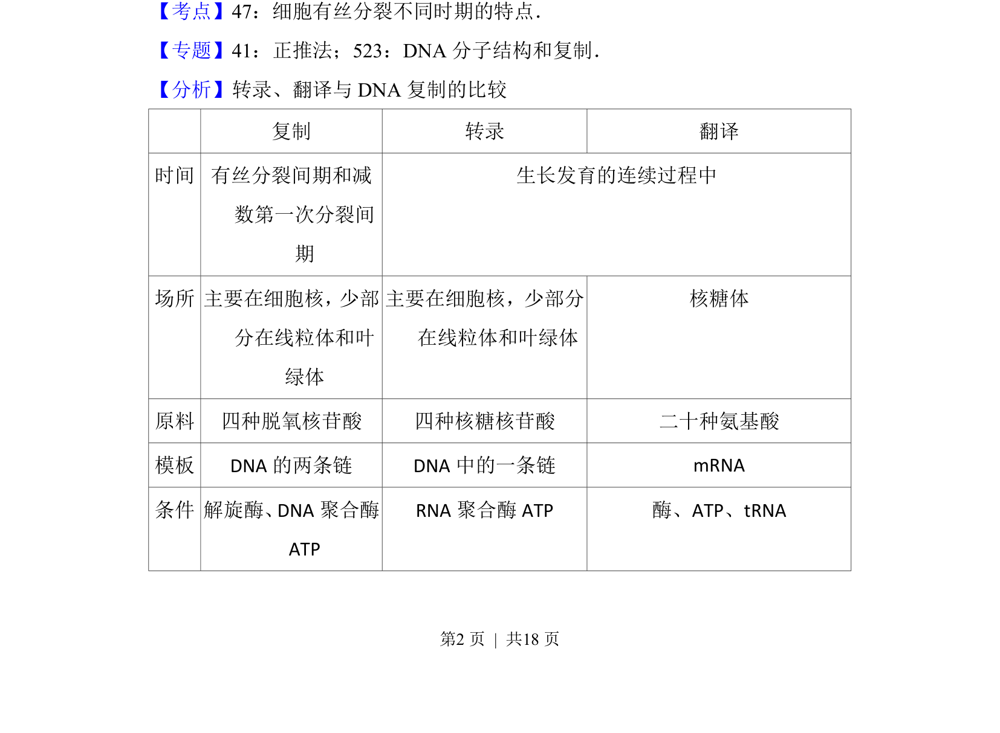
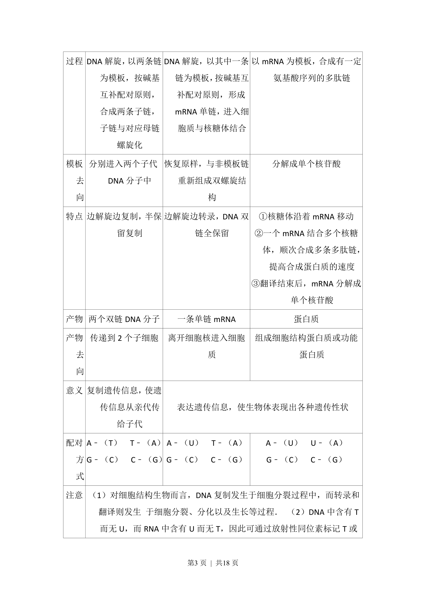
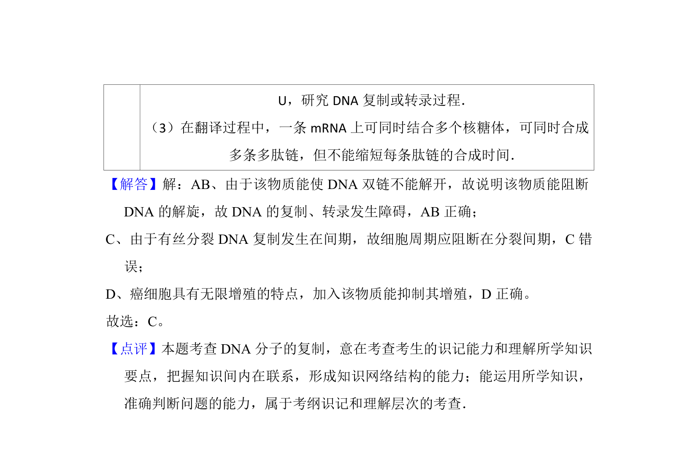

考点：有丝分裂 染色体 遗传物质 稳定性

本题简述细胞有丝分裂对维持亲代与子代遗传性状稳定性的意义。



📄 原 PDF 第 2 页：
素材/真题/吉林/2008-2024·（吉林）生物高考真题/2016年高考生物试卷（新课标Ⅱ）（解析卷）.pdf
2．（6分）某种物质可插入DNA分子两条链的碱基对之间，使DNA双链不能 解开．若在细胞正常生长的培养液中加入适量的该物质，下列相关叙述错误 的是（ ） A．随后细胞中的DNA复制发生障碍 B．随后细胞中的DNA转录发生障碍 C．该物质可将细胞周期阻断在分裂中期 D．可推测该物质对癌细胞的增殖有抑制作用
【考点】47：细胞有丝分裂不同时期的特点．菁优网版权所有 【专题】41：正推法；523：DNA分子结构和复制． 【分析】转录、翻译与DNA复制的比较 复制 转录 翻译 时间 有丝分裂间期和减 数第一次分裂间 期 生长发育的连续过程中 场所 主要在细胞核， 少部 分在线粒体和叶 绿体 主要在细胞核，少部分 在线粒体和叶绿体 核糖体 原料 四种脱氧核苷酸 四种核糖核苷酸 二十种氨基酸 模板 DNA的两条链 DNA中的一条链 mRNA 条件 解旋酶、DNA聚合酶 ATP RNA聚合酶ATP 酶、ATP、tRNA